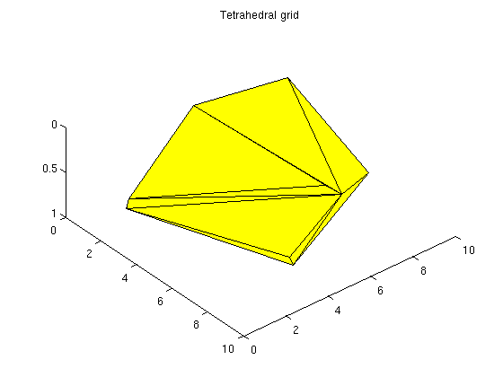

Contents
- Create a 2D grid
- Plot cell, face, and node numbers
- Finding mappings between grid primitives
- Neighborship is defined through faces
- Generating synthethic grids using MRST
- Triangulated grids
- Triangular grids
- Extruded grid
- Explicit hexahedral grid
- Grids can be manipulated after creation
- Some grid routines produce GRDECL structures
- simpleGrdecl can generate different grids based on optional parameters
- simpleGrdecl - default parameters
- simpleGrdecl - with a function handle
- simpleGrdecl - flat with linear fault
Create a 2D grid
We start by creating a simple 2D Cartesian grid. We then remove one cell and add geometry information to the resulting grid.
G = cartGrid([3,2]); G = removeCells(G, 2); G = computeGeometry(G);
Plot cell, face, and node numbers
newplot; % Plot the grid plotGrid(G,'FaceColor',[0.95 0.95 0.95]); axis off; hold on; % To improve readability, we extract the cell and face centroids as well as % the coordinates of each node. These will be used for plotting the cells, % faces and node indices respectively. c_cent = G.cells.centroids; f_cent = G.faces.centroids; coords = G.nodes.coords; % Add circles around the centroids of each cell plot(c_cent(:,1), c_cent(:,2),'or','MarkerSize',24); % Plot triangles around face centroids plot(f_cent(:,1), f_cent(:,2),'sg','MarkerSize',24); % Plot squares around nodes plot(coords(:,1), coords(:,2),'db','MarkerSize',24); legend({'Grid', 'Cell', 'Face', 'Node'}, 'Location', 'SouthOutside', 'Orientation', 'horizontal') % Plot cell/face centroids and nodes text(c_cent(:,1)-0.04, c_cent(:,2), num2str((1:G.cells.num)'),'FontSize',20); text(f_cent(:,1)-0.045, f_cent(:,2), num2str((1:G.faces.num)'),'FontSize',16); text(coords(:,1)-0.075, coords(:,2), num2str((1:G.nodes.num)'),'FontSize', 18); title('Grid structure') hold off;
Finding mappings between grid primitives
The unstructured grid is built upon coordinates representing nodes, nodes representing faces and faces representing cells. To save memory, some attributes are run length encoded. For more information, see 'help grid_structure'. For instance, let us look up information for the faces.
faces =[ rldecode(1 : G.cells.num,diff(G.cells.facePos), 2).' G.cells.faces];
tag = {'West'; 'East'; 'South'; 'North'; 'Bottom'; 'Top'};
fprintf('Cell\tFace\tTag id\tTag\n');
for i=1:size(faces,1)
fprintf(' %3d\t%3d\t%3d\t[%s]\n', faces(i,1:3), tag{faces(i,3)});
end
Cell Face Tag id Tag 1 1 1 [West] 1 9 3 [South] 1 2 2 [East] 1 11 4 [North] 2 3 1 [West] 2 10 3 [South] 2 4 2 [East] 2 13 4 [North] 3 5 1 [West] 3 11 3 [South] 3 6 2 [East] 3 14 4 [North] 4 6 1 [West] 4 12 3 [South] 4 7 2 [East] 4 15 4 [North] 5 7 1 [West] 5 13 3 [South] 5 8 2 [East] 5 16 4 [North]
Neighborship is defined through faces
G.faces.neighbors(i,:) contains the cells neighboring to face i. We define a new grid and plot the neighbors of face 10 in the new grid. G = cartGrid([3,3,1]);
clf; plotGrid(G,'FaceAlpha', 1, 'FaceColor', [0.95 0.95 0.95]); axis off; f = 6; plotGrid(G, G.faces.neighbors(f,:), 'FaceColor', 'Green') text(f_cent(f,1)-0.1, f_cent(f,2), num2str(f),'FontSize',16,'Color','red'); % This also defines the boundary faces, since faces with only one neighbor % is on the edge of the domain: boundary = any(G.faces.neighbors==0,2); facelist = 1:G.faces.num; fprintf('Boundary faces: \n') facelist( boundary) %#ok intentional display fprintf('Internal faces: \n') facelist(~boundary) %#ok intentional display
Boundary faces:
ans =
1 2 3 4 5 8 9 10 12 14 15 16
Internal faces:
ans =
6 7 11 13
Generating synthethic grids using MRST
There are many options for creating synthethic grids in MRST. For instance, the simple cartGrid already shown is a special case of tensorGrid:
G = tensorGrid((1:10).^3, 1:5); clf; plotGrid(G);
Triangulated grids
We can generate a triangulated grid using existing triangulations, from MATLAB or elsewhere.
% Generate points pts = rand(20,3).*repmat([10,10,1], 20, 1); % Triangulate T = DelaunayTri(pts(:,1), pts(:,2), pts(:,3)); G = tetrahedralGrid(pts, T.Triangulation); clf; title('Tetrahedral grid') plotGrid(G); view(50,60)
Triangular grids
Generate a 2D triangle grid from the same data using the xy-coordinates
pts_2d = pts(:,1:2); % Triangulate T_tri = DelaunayTri(pts_2d(:,1), pts_2d(:,2)); G_tri = triangleGrid(pts_2d, T_tri.Triangulation); clf title('Triangular grid') plotGrid(G_tri);
Extruded grid
If we have an interesting 2D grid, we can easily extend it to 3D by using makeLayeredGrid. We will extend the previous triangle grid to 3 layers
G = makeLayeredGrid(G_tri, 3);
clf;
title('Extruded triangular grid')
plotGrid(G);
view(50,60)
Explicit hexahedral grid
Hexahedral grids can also be generated by lists of nodes and node indices. For valid node ordering, see help hexahedralGrid
H = [1 2 3 4 5 6 7 8; ... % Cell 1 2 9 10 3 6 11 12 7]; ... % Cell 2 P = [ 1 0 0.1860; ... 1 1 0.1852; ... 1 1 0.1926; ... 1 0 0.1930; ... 0 0 0.1854; ... 0 1 0.1846; ... 0 1 0.1923; ... 0 0 0.1926; ... 1 2 0.1844; ... 1 2 0.1922; ... 0 2 0.1837; ... 0 2 0.1919]; ... G = hexahedralGrid(P, H); clf; plotGrid(G); axis tight view(40,40)
Grids can be manipulated after creation
We can alter the attributes of a grid after creation. In this example we twist the grid slightly. One caveat: Any computed properties of the grid will not be altered. For instance, computeGeometry must be called again after grid updates to get correct cell centroids.
G = cartGrid([10, 10]); G_before = computeGeometry(G); % Twist the coordinates to create a non-K-orthogonal grid. G_after = twister(G); G_after = computeGeometry(G_after); clf; plotGrid(G_after); hold on plot(G_before.cells.centroids(:,1), G_before.cells.centroids(:,2), 'Or') plot(G_after.cells.centroids(:,1), G_after.cells.centroids(:,2), 'xb') legend('Twisted grid', 'Original centroids', 'Modified centroids', ... 'Location', 'NorthOutside', 'Orientation', 'horizontal')
Some grid routines produce GRDECL structures
These can be converted to MRST grids using processGRDECL, just as one would with a GRDECL file read using readGRDECL. For instance, here is a three layered structure which is easy to generate by creating pillars manually.
G = processGRDECL( threeLayers(10,10,5)); G = computeGeometry(G); clf; % Color the cells by the cell volume to show the layered structure. plotCellData(G, G.cells.volumes,'EdgeColor','k'); view(120,10); axis tight off
simpleGrdecl can generate different grids based on optional parameters
Generate three grids using the same function
grdecl = simpleGrdecl([20, 20, 5]);
G1 = processGRDECL(grdecl);
grdecl = simpleGrdecl([20, 20, 5], @(x) 0.05 * (sin(2*pi*x) - 1.5));
G2 = processGRDECL(grdecl);
grdecl = simpleGrdecl([20, 20, 5], @(x) 0.25*(x-0.5), 'flat', true);
G3 = processGRDECL(grdecl);
simpleGrdecl - default parameters
The default parameter gives a simple, wavy grid.
clf; plotGrid(G1) view(3); axis tight off;
simpleGrdecl - with a function handle
By supplying a function handle, the grid becames faulted based on the values of the function at the fault line.
clf; plotGrid(G2) view(3); axis tight off;

simpleGrdecl - flat with linear fault
Create a flat grid with another fault function
clf; plotGrid(G3) view(3); axis tight off;